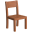
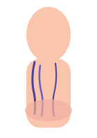

भारत का विश्वसनीय स्वास्थ्य जर्नल • ईएसटी. 2009
| दिल्ली 34°C | मुंबई 31°सेल्सियस
महिलाओं के पैरों का स्वास्थ्य • आज अपडेट किया गया • भारत संस्करण
📍 महाराष्ट्र, दिल्ली, कर्नाटक में वितरित
क्या 14 दिनों में पैरों में सूजन वाली नसों से होने वाली परेशानी को कम करना संभव है? भारत में महिलाएं नॉर्मवेइन के बारे में क्यों तेजी से बात कर रही हैं?
पैरों में भारीपन, जलन, सूजन और उभरी हुई नीली नसें न केवल एक सौंदर्य संबंधी समस्या है. इस स्थिति के कारण चलना, काम करना, पारिवारिक गतिविधियों में शामिल होना और आत्मविश्वास महसूस करना कठिन हो सकता है।

सचित्र फोटो. व्यक्तिगत लक्षण अलग-अलग हो सकते हैं
डॉक्टरों के अनुसार, भारत में 30 से 55 वर्ष की आयु की 40% से अधिक महिलाओं को पैरों में भारीपन, नसें दिखाई देने और सूजन का अनुभव होता है - विशेष रूप से गर्भावस्था के बाद और काम पर लंबे समय तक खड़े रहने के बाद. लेकिन बहुत कम लोग जानते हैं कि अपने पैरों की ठीक से देखभाल कैसे करें और समय पर इस पर ध्यान कैसे दें।
पाठक की कहानी
पुणे की 39 वर्षीय मां अंजलि हमेशा सक्रिय जीवन जीती हैं. सुबह वह बच्चों को स्कूल के लिए तैयार करती, घर की देखभाल करती, काम करती और शाम को वह पारिवारिक मामलों में लौट आती।. उसका दिन जल्दी शुरू होता था और लगभग कभी भी समय पर ख़त्म नहीं होता था.
लेकिन दूसरी बार गर्भधारण करने के बाद उन्हें अपने पैरों में अजीब सा भारीपन नजर आने लगा. पहले तो अंजलि को लगा कि यह सिर्फ थकान है. फिर उसके पैरों पर नीली नसें उभर आईं, शाम को सूजन तेज हो गई और रात में वह अक्सर जलन के कारण जाग जाती थी
"मैं सचमुच डर गई जब मेरी बेटी ने पूछा, 'माँ, आप अब हमारे साथ पार्क में क्यों नहीं खेलतीं?'"
- अंजलि, 39, पुण
उस पल, अंजलि को एहसास हुआ: उसके पैरों की समस्या न केवल उसकी उपस्थिति को प्रभावित करती है. यह आपकी ऊर्जा, आत्मविश्वास और आपके परिवार के लिए मौजूद रहने की क्षमता को छीन लेता है।

सचित्र फोटो. अंजलि फिर से अपने बच्चों के लिए एक सक्रिय माँ बनना चाहती थी।
जानना ज़रूरी है
उभरी हुई नसें सिर्फ एक कॉस्मेटिक दोष नहीं हैं
कई महिलाएं शुरू में अपने पैरों में सूजन, भारीपन और संवहनी नेटवर्क को नजरअंदाज कर देती हैं. ऐसा लगता है जैसे यह सिर्फ एक लंबे दिन के बाद की थकान है।. लेकिन समय के साथ, असुविधा बढ़ सकती है और सामान्य जीवन में बाधा उत्पन्न हो सकती है।
 भारी पैर
शाम को सूजन
जलन या जकड़न महसूस होना
नीली या बैंगनी रंग की उभरी हुई नसें
लंबे समय तक खड़े रहने के बाद दर्द होना
स्कर्ट, साड़ी या खुले कपड़े पहनने पर बेचैनी
भारी पैर
शाम को सूजन
जलन या जकड़न महसूस होना
नीली या बैंगनी रंग की उभरी हुई नसें
लंबे समय तक खड़े रहने के बाद दर्द होना
स्कर्ट, साड़ी या खुले कपड़े पहनने पर बेचैनी
वाल्व काम करते हैं, रक्त समान रूप से ऊपर की ओर बहता है
→
वाल्व कमजोर हो जाते हैं, दीवारें फैल जाती हैं, रक्त प्रवाह बाधित हो जाता है
जब पैर की नसों में रक्त संचार कम हो जाता है तो वैरिकोज नसें अधिक ध्यान देने योग्य हो सकती हैं।
प्रसंग
भारत में महिलाओं में यह समस्या इतनी आम क्यों है?
काम पर लंबे समय तक खड़े रहना, गर्म मौसम, गर्भावस्था, वजन बढ़ना, एक गतिहीन जीवन शैली, कार्यालय में लंबे समय तक बैठे रहना और वंशानुगत संवहनी कमजोरी, ये सभी पैरों की नसों पर भार बढ़ा सकते हैं।
गर्भावस्था और हार्मोनल परिवर्तन
गर्भावस्था के बाद, पैरों और रक्त वाहिकाओं पर भार बढ़ सकता है।
पैरों पर काम कर
लंबे समय तक खड़े रहने से अक्सर पैरों में भारीपन और थकान महसूस होती है।

आसीन जीवन शैली
लंबे समय तक बैठे रहने और हिलने-डुलने की कमी से परिसंचरण ख़राब हो सकता है
वंशानुगत प्रवृत्ति
यदि ऐसी ही समस्या परिवार में चलती है, तो जोखिम अधिक हो सकता है
अंजलि को उत्पाद के बारे में कैसे पता चला?
अंजलि को नॉर्मवेइन के बारे में कैसे पता चला?
एक महिला स्वास्थ्य समूह में, अंजलि ने नॉर्मवेइन के बारे में एक चर्चा पढ़ी. कई महिलाओं ने लिखा है कि यह क्रीम फॉर्मूला उन्हें अपने पैरों की देखभाल करने में मदद करता है, जिससे लंबे दिन के बाद भारीपन, सूजन और थकान की भावना कम हो जाती है।
अंजलि ने नॉर्मवेइन को आज़माने का फैसला किया क्योंकि उत्पाद को शीर्ष पर लगाया जाता है, जटिल प्रक्रियाओं की आवश्यकता नहीं होती है और दैनिक देखभाल में आसानी से फिट बैठता है।
हेल्थ सिस्टर्स इंडिया
1,284 प्रतिभागी
⋮
चित्रण. शैलीबद्ध चैट. नाम बदल दिए गए हैं
उत्पाद का परिचय
नॉर्मवेइन - भारीपन, सूजन और दिखाई देने वाली नसों के साथ पैरों के लिए दैनिक क्रीम देखभाल


नॉर्मवेइन एक सामयिक क्रीम है जिसे दैनिक पैरों की देखभाल के लिए डिज़ाइन किया गया है।. यह हल्कापन, ठंडक और आराम का एहसास दिलाने में मदद करता है, खासकर उन लोगों को जो लंबे समय तक खड़े रहते हैं, बहुत चलते हैं या शाम को अपने पैरों में सूजन और थकान महसूस करते हैं।
✦ महिलाएं नॉर्मवेइन को क्यों चुनती हैं?
- लगाने में आसान
- चिपचिपा एहसास नहीं छोड़ता
- ठंडक का एहसास देता ह
- दैनिक देखभाल के लिए उपयुक्त
- प्राप्ति पर भुगतान के साथ ऑर्डर किया जा सकता ह
- सरल, गोपनीय पैकेजिंग में वितरित
आवेदन प्रदर्शन. केवल बाहरी उपयोग के लिए.
भावनाएँ
नॉर्मवेइन लगाने के बाद आप क्या महसूस कर सकते हैं?
पहले दिन पर
आपके पैरों में ठंडक, ताज़गी और आराम महसूस हो रहा है
पहले सप्ताह में
शाम को भारीपन और थकान कम महसूस हो सकती है
नियमित उपयोग के साथ
अपने पैरों की देखभाल करना एक आदत बन जाती है, आपकी त्वचा और पैर अधिक आरामदायक महसूस कर सकते हैं।
*परिणाम व्यक्तियों के बीच भिन्न हो सकते हैं. इस उत्पाद का उद्देश्य बीमारी का निदान, उपचार, इलाज या रोकथाम करना नहीं है।
देखभाल से पहले और बाद में
महिलाएं परिवर्तन क्यों देखती हैं?

सूजन और थकान
- भारीपन और थकान
- दृश्यमान नस
- शाम को सूजन
हल्कापन और आराम
- हल्कापन महसूस होना
- ठंडा और ताज़ा
- काम के बाद आराम
चित्रण. व्यक्तिगत परिणाम भिन्न हो सकते हैं. जब पैरों की देखभाल नियमित हो जाती है, तो कई महिलाएं ध्यान देती हैं कि उन्हें भारीपन, थकान और असुविधा कम महसूस होती है।

जानें आज का खास ऑफर

विशेष पेशकश
Normavein 50% छूट के साथ उपलब्ध है
Normavein
यह ऑफर केवल हेल्थ भारत टुडे के वर्तमान पाठकों के लिए उपलब्ध है. पैकेजों की संख्या सीमित है और अगली डिलीवरी तिथि की अभी तक पुष्टि नहीं की गई है।
🛒 50% छूट के साथ ऑर्डर करेंयह ऑफर केवल हेल्थ भारत टुडे के वर्तमान पाठकों के लिए उपलब्ध है. पैकेजों की संख्या सीमित है.
विशेषज्ञ की राय
क्या कहते हैं विशेषज्ञ?
डॉ. प्रिया नायर
कल्याण सलाहकार
"
लंबे समय तक खड़े रहना, गर्भावस्था, व्यायाम की कमी और अधिक वजन के कारण पैरों और रक्त वाहिकाओं पर तनाव बढ़ सकता है।. ऐसे मामलों में, नियमित रूप से चलना, अपने पैरों को आराम देना, हल्का व्यायाम और बाहरी देखभाल सहायक आदतें हो सकती हैं।
नॉर्मवेइन जैसी क्रीम आपकी दैनिक स्व-देखभाल दिनचर्या का हिस्सा हो सकती हैं, जो आपके पैरों को ठंडा, ताज़ा और आरामदायक महसूस कराने में मदद करती हैं।
⚕️ महत्वपूर्ण: यदि दर्द, सूजन या दिखाई देने वाली नसें गंभीर हैं, तो किसी योग्य स्वास्थ्य देखभाल पेशेवर से परामर्श लें।
मिश्रण
नॉर्मवेइन के बारे में क्या खास है?
हॉर्स चेस्टनट अर्क
एक लोकप्रिय हर्बल घटक जो अक्सर पैरों की देखभाल के उत्पादों में उपयोग किया जाता है
मेन्थॉल का शीतलन प्रभाव
त्वचा को ठंडा, ताज़ा और आरामदायक महसूस कराता है
प्लांट सपोर्ट कॉम्प्लेक्स
दैनिक पैरों की देखभाल और आराम के लिए उपयुक्त
हल्की मालिश का फार्मूला
क्रीम लगाना आसान है और त्वचा पर आराम से फैलती है।
मिश्रण
नॉर्मवेइन के बारे में क्या खास है?
अपनी त्वचा साफ़ करें
अपने पैरों को साफ़ और सुखा लें
क्रीम ले लो
अपनी उंगलियों पर थोड़ी मात्रा में क्रीम लें
आवेदन करना
नीचे से ऊपर तक हल्के हाथों से मालिश करते हुए लगाएं
नियमितता
प्रतिदिन 1-2 बार उपयोग करें
आदत
सर्वोत्तम परिणामों के लिए, साज-सज्जा को एक नियमित आदत बनाएं
नॉर्मवेइन का उपयोग कौन कर सकता है?
तुलना
बहुत से लोग नॉर्मवेइन को क्यों चुनते हैं?
तुलना
बहुत से लोग नॉर्मवेइन को क्यों चुनते हैं?
बेहतर परिणाम के लिए क्रीम को दिन में 2 से 3 बार लगाएं। इसे पूरी तरह सोखने तक नीचे से ऊपर की ओर (टखनों से जांघों तक) हल्के हाथों से मसाज करते हुए लगाएं। पैरों का भारीपन और सूजन दूर कर उन्हें फिर से हल्का बनाने का मुख्य रहस्य नियमितता ही है।
बिलकुल नहीं। Normavein का टेक्सचर बहुत हल्का है जो त्वचा में जल्दी सोख जाता है। यह बिना कोई तैलीय परत (greasy film), चिपचिपाहट या कपड़ों पर दाग छोड़े 1-2 मिनट में त्वचा के अंदर पूरी तरह समा जाता है। आप इसे लगाने के तुरंत बाद अपने पसंदीदा कपड़े पहन सकते हैं या बिस्तर पर जा सकते हैं।
जी हां, बिलकुल। आप कैश ऑन डिलीवरी (COD) के विकल्प के साथ ऑर्डर दे सकते हैं। आपको पैसे तभी देने होंगे जब पार्सल आपके डिलीवरी पार्टनर या कूरियर बॉय से मिल जाएगा और आप खुद उसकी पैकेजिंग देख लेंगे।
पूरी तरह से। हम आपकी गोपनीयता का सम्मान करते हैं। क्रीम को एक मजबूत, अपारदर्शी (non-transparent) कूरियर बैग में डिलीवर किया जाता है, जिस पर कोई लोगो, मेडिकल शब्द या उत्पाद का नाम नहीं होता है। डिलीवरी स्टाफ या आपके पड़ोसियों को भी पता नहीं चलेगा कि बॉक्स के अंदर क्या है।
Normavein पैरों की थकान, भारीपन, वैरिकाज़ वेन्स के शुरुआती लक्षणों और सूजन से राहत देने में बहुत कारगर है।
हालांकि, अगर आपको नीचे दिए गए लक्षण दिखें, तो डॉक्टर (फलेबोलॉजिस्ट) से सलाह जरूर लें:
- केवल एक पैर में अचानक तेज सूजन या गंभीर दर्द होना।
- नसों के आसपास की त्वचा का लाल होना, सख्त होना या वहां बहुत ज्यादा गर्मी महसूस होना।
- पैरों की त्वचा पर काले धब्बे या न ठीक होने वाले घाव (ट्रॉफिक अल्सर) का दिखना।
याद रखें: यह क्रीम घरेलू देखभाल, रोकथाम और लक्षणों से राहत पाने का एक बेहतरीन साधन है, लेकिन यह गंभीर स्थिति
में डॉक्टर के इलाज की जगह नहीं ले सकती।
पाठक टिप्पणियाँ
पाठकों की राय
5 टिप्पणियाँ
सरिता, 36 साल की ✓ क्रेता
📍 मुंबई · 2 घंटे पहल
रंजीता, 29 साल की ✓ क्रेता
📍 दिल्ली · 4 घंटे पहले
मान्या, 34 साल की ✓ क्रेता
📍 पुणे · 5 घंटे पहले
ईशानी, 41 साल की
📍 चेन्नई · 6 घंटे पहले
कविता, 38 साल की ✓ क्रेता
📍 बेंगलुरु · 8 घंटे पहल
आज ही 50% छूट के साथ नॉर्मवेइन प्राप्त करें
पुरानी कीमत
₹3,700पुरानी कीमत
1800uah50% छूट
प्राप्ति पर भुगतान